Blender · Multimedia 12 · Sprint 6 · Lessons 1–9 · animation and virtual production, part 1
BLENDER BOOTCAMP.
Build one complete winter scene from an empty file: a cottage with smoke from the chimney, snow falling, footprints to a snowman, glowing lanterns and a car in the drive. Then animate it, finish it and render it.
The demo scene, built and rendered in Blender 5 with exactly the steps in this bootcamp. Yours will be your own version.
One scene. Every core skill.
Each lesson adds a new layer to the same file: shapes, detail, textures, light, models, snow, forest, particles, smoke, motion and finish. Earn your Blender Licence as you go.
My supports
Turn on any help you want. Your teacher may have set some for you. They change how the guide helps, not what is assessed.
Studio brief
Lantern Lane’s winter opening shot.
The studio needs a 4-second opening shot for its winter showreel: a cottage at dusk, smoke from the chimney, snow falling, footprints leading to a snowman, lanterns along the path, a car in the drive. You build it from an empty file, one layer per lesson, then the producer changes the brief.
You will hand in
WinterCottage_YourName.blend and _v2.blend
A still render (Licence 2)
A 4-second MP4 (Licence 3)
A three-sentence explanation of your changed brief
What’s next
Sprint 7: Grease Pencil 2D and character animation with Mixamo and motion capture, plus After Effects motion graphics. Sprint 8: put yourself into a 3D world on the green screen.
Animation and VFX studios build scenes in layers exactly like this: block-out, modelling, texturing (often with free libraries like ambientCG and Poly Haven), lighting, effects (particles and fluids), animation and compositing. Each layer can be handed to a different artist, which is why clean names and a tidy project folder matter.
Blender is free and used by independent studios, YouTube creators and on award-winning films. Solo creators like Ian Hubert and Drifting Walnut make whole shots alone with these same tools, which is where this unit is heading.
Knowledge first
What each layer of a scene does.
3D space and modelling
Objects have location, rotation and scale on X (red), Y (green) and Z (blue). Edit Mode shapes vertices, edges and faces; modifiers (Bevel, Subdivision, Displace) add detail without destroying the original.
Materials, UVs and textures
A UV map unfolds a model flat so an image can wrap onto it. Colour, roughness and normal maps together make a surface read as wood, brick or tile. Emission makes a surface glow.
Weight painting and particles
Weights (0 blue to 1 red) stored on vertices can control where particles grow, and later how a character bends. Particle systems create thousands of copies (trees, snowflakes) from one setting.
Simulation
Smoke is a fluid simulation inside a domain box, calculated (baked) once and then played back.
Animation and finishing
Keyframes save values at moments in time; the Graph Editor controls easing. The compositor adds glow and colour after rendering.
Design principles in the shot
Emphasis: the warm windows are the brightest thing. Contrast: warm light against cool snow and sky. Balance and thirds: cottage and snowman on opposite thirds. Movement: smoke rising and snow falling lead the eye through the frame.
What this assesses
Skills you will show.
Skill (sprint skill ID)
Where you show it
Navigation · BL-NAV-01 · Transforms · BL-TRN-01
Steps 1–3 (Licence 1); modelling in steps 4–5
Lighting · BL-LGT-01 · Match light and colour · PS-LGT-02
Steps 7, 8 and 15
Camera · BL-CAM-01 · Hierarchy · GD-HIE-01
Step 9 (Licence 2)
Render · BL-RND-01
Steps 9 and 17 (Licence 2 and 3)
Effects and animation (weight paint, particles, smoke, keyframes, compositing)
Steps 10–15 and the practical check
Primary achievement evidence: the changed brief (step 16), plus the Licence 3 observation. Guided steps, supports and licence practice are recorded separately from achievement. Sprint mm12-26-s06; outcomes 2.1–2.5.
Session A · Lesson 1 · mm12-26-s06-d01
Start the scene. Earn Licence 1.
You are a new junior artist at Lantern Lane, a small animation studio. Over nine lessons you build one winter scene from an empty file: a cottage with smoke, snow falling, a snowman, lanterns and a car in the drive.
TODAYSet up (15 min), navigate (20 min), block out the cottage (30 min). Licence 1 check.
01
Set up the project and learn the layout
IN SHORTNew General file; find six areas; project folder with the starter pack; Save As.
READ ALOUD
DOCUMENT: Blender 5.2 · WinterCottage_YourName.blend SELECT: The default Layout workspace TOOLS / ROUTE: File › New › General · File › Save As
Open Blender 5.2, choose File › New › General, and delete the default cube (X › Delete).
Find the six areas: top bar and workspaces (1), Toolbar (2), 3D Viewport (3), Outliner (4), Properties (5), Timeline (6).
Make a project folder WinterCottage_YourName. Download the starter pack (textures and models, in the brief above) and unzip it inside.
Choose File › Save As and save WinterCottage_YourName.blend in that folder.
From now on: Ctrl/Cmd+S after every step.
Blender Licence 1
Navigate, move/rotate/scale on an axis, block out a model, save correctly.
Blender Licence 2
Edit Mode, modifiers, UV textures, emission, appended models, camera and a clean render.
Blender Licence 3
Weight paint, particles, smoke, keyframes, compositing and a rendered animation.
Add › Mesh › Plane; scale it big (S 30) for the ground. Rename it Snow ground.
Add a cube for the cottage: in the N sidebar set Dimensions 6 × 4.5 × 3 m and Location Z 1.5. Rename it Cottage.
Add a cube for the roof: Dimensions 6.8 × 5.3 × 2.2, sitting on top. In Edit Mode, select the two top edges and scale them to a ridge (S Y 0).
Select the bottom face of the roof and move it down so it sits exactly on the walls.
Licence 1 check: your teacher calls out three transforms (for example “move the roof 0.5 up on Z”) and watches you do them.
STEP CHECKLIST
GLOSSARY
Block-out: A quick model of the main shapes before detail
Dimensions: The real size of an object in metres
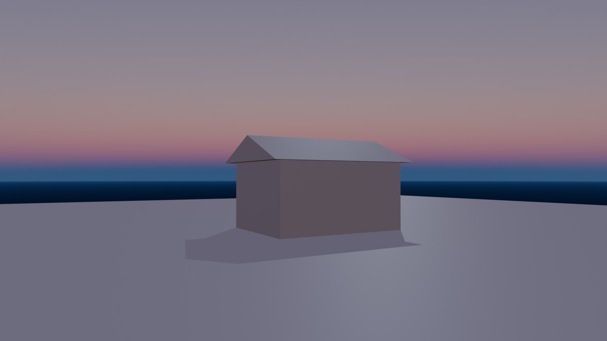
Real render after the block-out: a cube cottage and a ridged roof on the ground, the base for everything else.
WHYPros block out big shapes first so the scene’s scale and composition are right before any detail. Typed values keep it exact.
CHECKA ground plane, a 6 × 4.5 × 3 m cottage, and a ridged roof that sits on the walls, all named.
FIXRoof floating? Select it and read Location Z in the sidebar. Scaled the wrong way? Press the axis letter after S.
WORKED EXAMPLE · DIFFERENT OBJECTWorked on a different building: a shed is the same steps, 3 × 2 × 2.2 m, with a flat sloped roof.
STRETCH (AFTER THE CHECK PASSES)Add an overhang: make the roof 20 cm wider than the walls on each side.
Method basis: B1 · V1. Values and sequence are authored for this project.
Session B · Lesson 2 · mm12-26-s06-d02
Model the details: chimney, door, windows, snowman.
Edit Mode turns boxes into a believable cottage, and simple spheres become a snowman with character.
TODAYChimney, door and windows (35 min), snowman (30 min).
04
Model the chimney, door and windows in Edit Mode
IN SHORTChimney; inset and extrude the top; door and windows with inset frames; Bevel modifiers.
READ ALOUD
DOCUMENT: WinterCottage_YourName.blend SELECT: A chimney cube, door and window cubes TOOLS / ROUTE: Tab · 3 (face) · I inset · E extrude · Bevel modifier
Add a cube for the chimney (0.7 × 0.7 × 2.4 m) through the roof near one end.
Tab into Edit Mode, press 3 for face select, select the top face, press I to inset, then E and move down to hollow it out.
Make a door (1.1 × 1.9 m) and two windows (1.1 × 1.0 m) as thin cubes on the front wall. Inset each front face to make a frame and push the middle in slightly.
Add a Bevel modifier (Amount 0.02 m, Segments 2) to the cottage, roof and chimney so edges catch the light.
Check from every side (Numpad 1, 3, 7).
STEP CHECKLIST
GLOSSARY
Inset: Creates a smaller face inside a face
Extrude: Pulls new geometry out of (or into) a surface
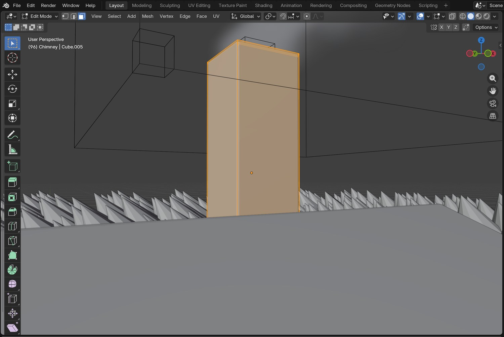
Real screenshot: the chimney in Edit Mode with face select. The top face was inset and pushed down to hollow it.
WHYInset and extrude are the two moves that turn simple blocks into detailed models. Bevels make edges look manufactured, not perfect.
CHECKA hollow-topped chimney through the roof, framed door and windows, and bevelled edges.
FIXInset joined faces together? Press I twice for individual insets. Bevel huge? Apply scale first (Ctrl/Cmd+A › Scale).
WORKED EXAMPLE · DIFFERENT OBJECTThe demo windows are one cube each: inset 8 cm for the frame, with the middle face pushed in 4 cm.
STRETCH (AFTER THE CHECK PASSES)Add a window box or shutters using the same inset and extrude moves.
Method basis: B2 · V1. Values and sequence are authored for this project.
05
Build the snowman
IN SHORTThree spheres; carrot, eyes, hat; place; join; position on a third.
READ ALOUD
DOCUMENT: WinterCottage_YourName.blend SELECT: Three spheres, a cone, small spheres, cylinders TOOLS / ROUTE: Add › Mesh · Shade Smooth · Ctrl/Cmd+J join
Add three UV spheres (radius 0.75, 0.55, 0.38 m) stacked in the front yard. Right-click › Shade Smooth.
Add a cone for the carrot nose (rotate 90° on X), two small spheres for eyes, and two cylinders for a top hat (brim and crown).
Move each piece into place using the front and side views.
Select all the snowman pieces, then Ctrl/Cmd+J to join them into one object. Rename it Snowman.
Place the snowman on a third of the camera view, not in front of the cottage.
STEP CHECKLIST
GLOSSARY
Join: Combine several objects into one
Shade Smooth: Makes curved surfaces look smooth
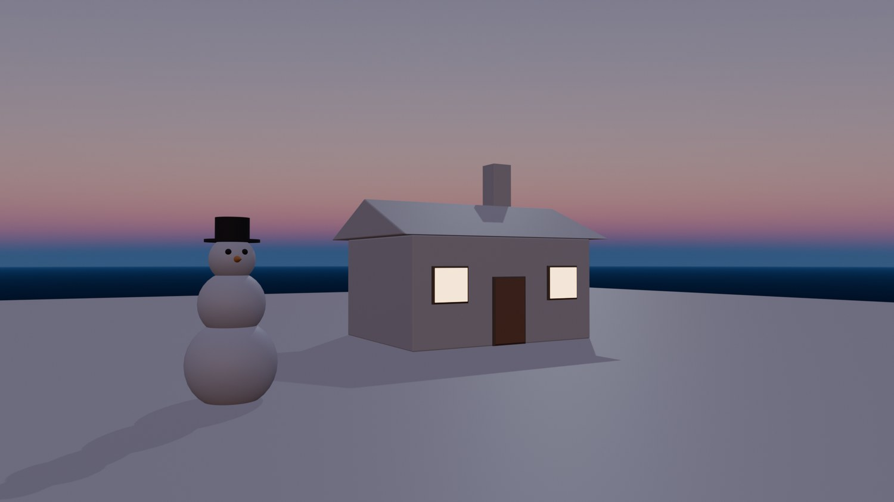
Real render: the cottage with its chimney, door and windows, and a snowman built from simple shapes.
WHYGreat characters are often simple shapes with clear silhouettes. Joining parts makes one object that is easy to move.
CHECKA recognisable snowman as one object, smooth-shaded, placed so it does not hide the cottage.
FIXPieces not joining? The last-selected piece must be active. Surface looks faceted? Shade Smooth.
WORKED EXAMPLE · DIFFERENT OBJECTThe demo snowman is ten simple shapes joined into one object.
STRETCH (AFTER THE CHECK PASSES)Give the snowman a scarf: a torus squashed flat, with a small cylinder hanging down.
Method basis: B1. Values and sequence are authored for this project.
Session C · Lesson 3 · mm12-26-s06-d03
Textures, glowing windows and lights.
Image textures make the cottage look built from real materials; emission makes windows glow; lights make it dusk.
TODAYUV unwrap and textures (35 min), emission and lights (30 min).
06
UV-unwrap the cottage and add real textures
IN SHORTCube-project UVs; colour, roughness and normal maps; repeat for roof and chimney; adjust scale.
Select the cottage, Tab into Edit Mode, select all (A), press U and choose Cube Projection. Repeat for the roof and chimney.
Open the Shading workspace. Give the cottage a new material, then drag WoodSiding008_1K-JPG_Color.jpg from the starter pack into the node editor and connect it to Base Color.
Add the Roughness map (set Non-Color) to Roughness, and the NormalGL map through a Normal Map node to Normal.
Do the same for the roof (RoofingTiles013A) and the chimney (Bricks097).
If the texture looks too big or small, add a Mapping node and change Scale.
STEP CHECKLIST
GLOSSARY
UV map: The flat layout that tells a texture how to wrap onto a model
Normal map: A texture that fakes small bumps and grooves
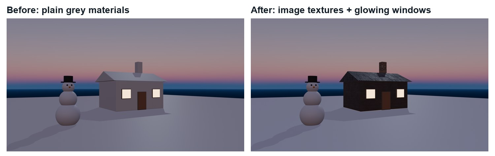
Before and after (real renders): plain materials, then UV-unwrapped image textures on the walls, roof and chimney.
WHYReal texture maps (colour, roughness and normal) are how studios make surfaces believable. The UV map tells Blender how to wrap a flat image onto a 3D object.
CHECKWood siding on the walls, tiles on the roof and bricks on the chimney, at a believable scale, with roughness and normal maps connected.
FIXTexture stretched or blurry? Re-unwrap with Cube Projection and adjust the Mapping scale. Looks pink? The image path is missing: re-link it from the starter pack.
WORKED EXAMPLE · DIFFERENT OBJECTThe demo wood siding uses Mapping scale 0.35, so the boards are about 15 cm wide.
STRETCH (AFTER THE CHECK PASSES)Add snow on the roof by mixing in white where the roof faces up (Geometry › Normal Z into a Mix).
Method basis: B3 · A1. Values and sequence are authored for this project.
07
Make the windows glow and light the dusk
IN SHORTEmissive window material; interior point light; dusk Sky Texture; moon Sun; Rendered check.
Give the window centres a material Window glow: Emission Color warm orange, Emission Strength about 6.
Add a Point light inside the cottage (warm, about 600 W) so light spills out of the windows onto the snow.
World properties: Color › Sky Texture, Sun Elevation about −1° (just after sunset), Strength about 0.5.
Add a weak Sun as moonlight (Strength 0.25, pale blue) from behind the cottage.
Check in the Rendered viewport: the windows should be the brightest, warmest thing.
STEP CHECKLIST
GLOSSARY
Emission: Light given off by a surface
Practical light: A light source visible in the scene
WHYEmission makes a surface give off light; practical lights inside make that glow believable. Warm windows against a cool sky is the classic cozy winter look.
CHECKGlowing windows, warm light spilling onto the snow, a dusk sky and a faint cool moon rim, checked in Rendered view.
FIXScene black? Check World strength and that lights are not hidden. Windows flat white? Lower Emission Strength.
WORKED EXAMPLE · DIFFERENT OBJECTThe demo windows emit orange at strength 6, with a 600 W interior light.
STRETCH (AFTER THE CHECK PASSES)Add a warm porch light above the door.
Method basis: B1. Values and sequence are authored for this project.
Session D · Lesson 4 · mm12-26-s06-d04
Bring in models, frame the shot. Licence 2.
Studios rarely build everything. Append ready-made models, add lantern lights, and frame the camera like a cinematographer.
TODAYAppend models and lanterns (30 min), camera and first render (35 min).
08
Append a car and lanterns from other files
IN SHORTAppend the car; place it; append the lantern; linked duplicates; lantern lights.
READ ALOUD
DOCUMENT: Starter pack: covered_car_1k.blend, Lantern_01_1k.blend SELECT: The car and the lantern objects TOOLS / ROUTE: File › Append · Object · Alt+D linked duplicates · Point lights
Choose File › Append. Open covered_car/covered_car_1k.blend, open the Object folder, select the car and click Append.
Move and rotate it into the drive beside the cottage (G, R Z).
Append the lantern the same way from Lantern_01/Lantern_01_1k.blend. Put it on a thin post (a cylinder) beside the path.
Make two more with Alt+D (linked duplicates share the same data) along the path.
Add a warm Point light (about 220 W) inside each lantern.
STEP CHECKLIST
GLOSSARY
Append: Copy an object from another .blend file into this one
Linked duplicate: A copy that shares mesh data with the original (Alt+D)
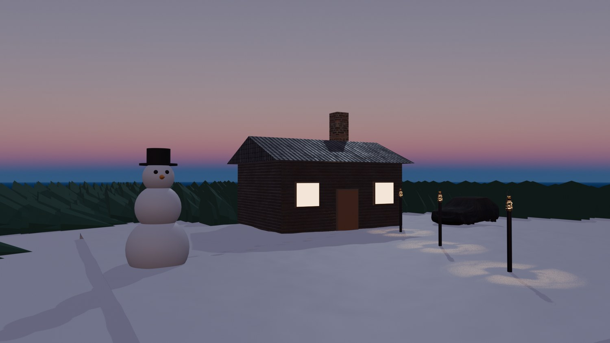
Real render: the appended Poly Haven car in the drive and lanterns along the path, each with its own warm light.
WHYAppending copies an object, with its materials, from another .blend. It is how studios reuse assets and how you will bring in Sketchfab and Mixamo models later.
CHECKThe car and three lanterns placed in the scene, lanterns lit, textures showing (not pink).
FIXModel is pink? Its textures were not found: keep the starter pack folders together. Can’t see the model? Press Numpad . with it selected.
WORKED EXAMPLE · DIFFERENT OBJECTBoth demo models are free CC0 assets from Poly Haven, credited in Sources.
STRETCH (AFTER THE CHECK PASSES)Append a second Poly Haven model that suits the scene (a barrel or a bench) and credit it.
Method basis: B8 · A2. Values and sequence are authored for this project.
09
Frame the camera and render a still. Licence 2 check.
IN SHORTFrame with Lock Camera to View; focal length and tilt; thirds; EEVEE render; Licence 2.
READ ALOUD
DOCUMENT: WinterCottage_YourName.blend SELECT: Camera, render and output settings TOOLS / ROUTE: Numpad 0 · Lock Camera to View · Focal Length · EEVEE · F12
Press Numpad 0. In the sidebar View tab, turn on Lock Camera to View and navigate to frame the shot; then turn it off.
Camera properties: Focal Length about 26–35 mm; camera height about 2 m; tilt up slightly so the chimney has space above it for smoke.
Turn on Composition Guides › Thirds. Put the cottage on one third and the snowman on the other.
Render properties: EEVEE, View Transform AgX. Output: 1920 × 1080. Press F12, then Image › Save As.
Licence 2 check: show your teacher the file (named objects, textures, emission, appended models, camera) and the saved still.
STEP CHECKLIST
GLOSSARY
Focal length: The lens setting; low numbers are wide
Rule of thirds: Placing subjects on imaginary thirds of the frame
WHYLens and framing decide what the audience feels. Leaving space above the chimney plans ahead for the smoke you add next.
CHECKA saved 1920 × 1080 still with the cottage and snowman on thirds and room above the chimney, and a signed Licence 2.
FIXRender black? The camera isn’t active: select it and press Ctrl/Cmd+Numpad 0. Camera flies away? Turn off Lock Camera to View.
WORKED EXAMPLE · DIFFERENT OBJECTThe demo camera: 26 mm, 2.3 m high, tilted 1° up, cottage right of centre, snowman on the left third.
STRETCH (AFTER THE CHECK PASSES)Render a second, low and wide angle and compare the mood.
Method basis: B1. Values and sequence are authored for this project.
Session E · Lesson 5 · mm12-26-s06-d05
Snow on the ground: drifts, footprints, a forest.
Real snow is never flat. Modifiers make drifts, a painted texture makes footprints, and weight painting decides where the forest grows.
TODAYDrifts and footprints (35 min), weight-painted forest (30 min).
10
Make snow drifts and paint footprints
IN SHORTDetailed yard; Clouds Displace; paint a footprint image; image Displace on UVs; tint in the material.
Add a plane over the front yard (about 16 m), just above the ground. Subdivide it in Edit Mode (about 100 cuts) and add a Subdivision Surface modifier set to Simple, level 2, so it has enough detail.
Add a Displace modifier with a new Clouds texture (Strength about 0.12): soft drifts.
Create a new white image (Texture Paint workspace › New, 1024 px, colour white). In Texture Paint mode, paint grey ovals from the door to the snowman: footprints.
Add a second Displace modifier using that image, Coordinates: UV, Midlevel 1.0, Strength about 0.25, so dark paint pushes the snow down.
In the snow material, use the same image to tint the prints slightly blue, so they read in soft light.
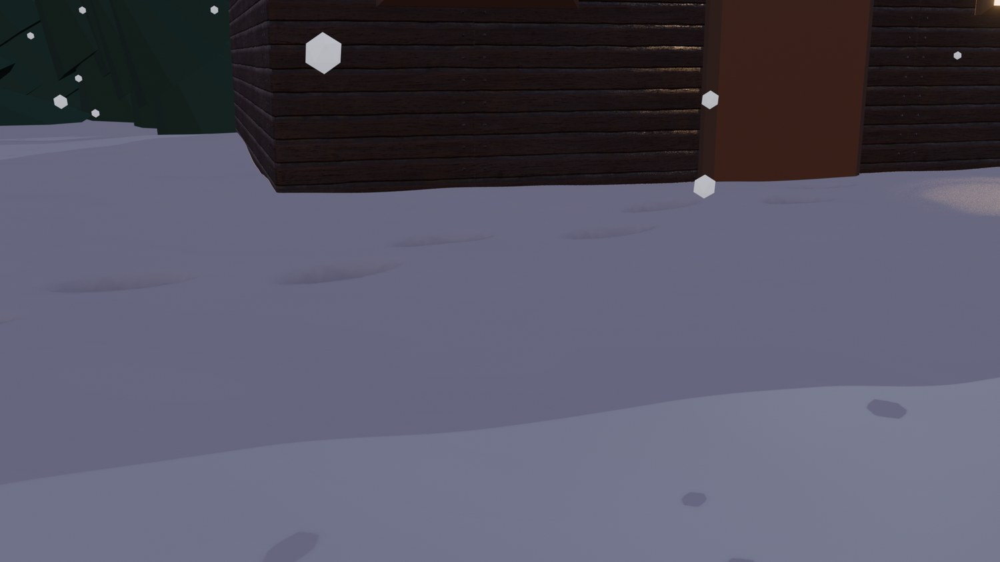
Real render from a close-up camera: the painted footprints pressed into the drifted snow.
STEP CHECKLIST
GLOSSARY
Displace modifier: Moves geometry up or down using a texture
Texture Paint: Painting directly onto an image on a model
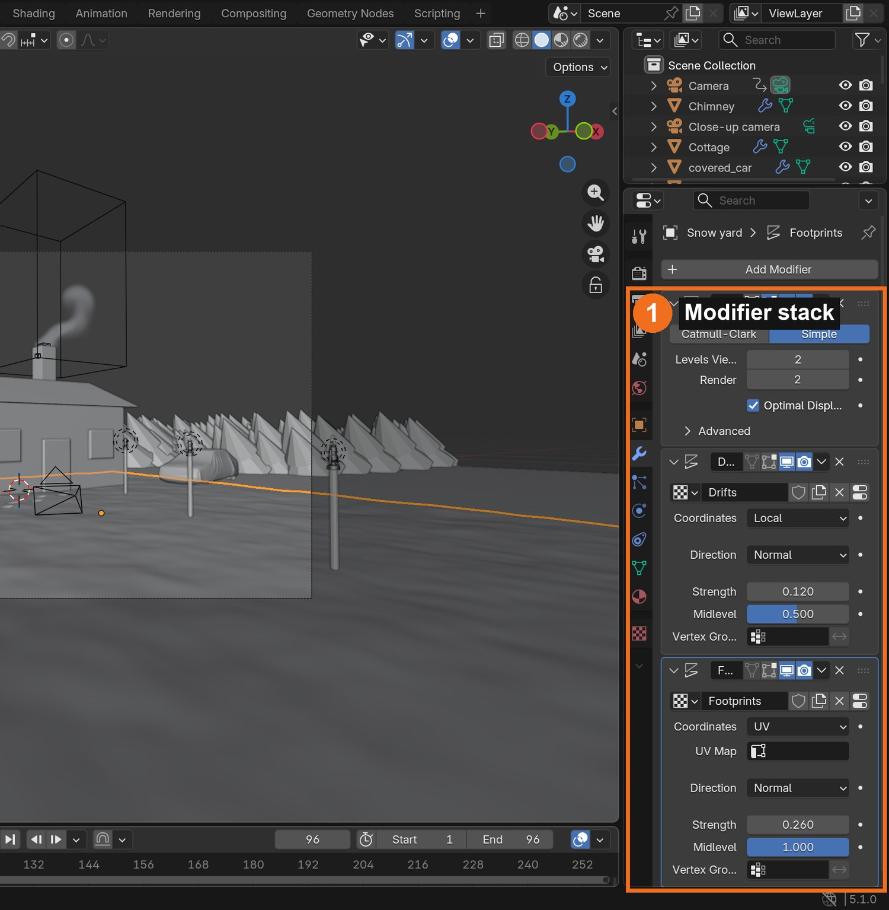
Real screenshot: the yard’s modifier stack. Simple subdivision, a Clouds Displace for drifts, and an image Displace for footprints.
WHYDisplacement moves real geometry, so drifts and footprints catch light and shadow. Painting a texture is how you control exactly where the prints go.
CHECKVisible drifts and a trail of footprints from the door to the snowman, driven by modifiers and your painted image.
FIXNo footprints? The yard needs more detail (subdivide more) and the Displace must use UV coordinates. Prints hidden? Make sure nothing (like the big ground plane) covers the yard.
WORKED EXAMPLE · DIFFERENT OBJECTThe demo prints are about 30 cm long, 55 cm apart, alternating left and right, 26 cm deep.
STRETCH (AFTER THE CHECK PASSES)Add tyre tracks from the car to the road with the same technique.
Method basis: B2. Values and sequence are authored for this project.
11
Weight-paint where the forest grows, then scatter trees
IN SHORTPine model; subdivide ground; paint the Forest group; hair particles of the pine; density = Forest.
READ ALOUD
DOCUMENT: WinterCottage_YourName.blend SELECT: The big ground plane and a pine tree TOOLS / ROUTE: Weight Paint mode · vertex group · Particle system (Hair › Object) · Density vertex group
Model a simple pine: three stacked cones joined together. Move it out of the camera view.
Select the ground, subdivide it (Edit Mode › Subdivide, about 60 cuts), and switch to Weight Paint mode. A vertex group is created: rename it Forest.
Paint red (weight 1) where trees should grow (behind and beside the cottage) and leave blue (0) around the cottage, path and yard.
Particle properties: add a system, type Hair, Render As Object, Instance Object: your pine, Number about 900, Size Randomness 0.45.
Under Vertex Groups › Density choose Forest. The trees now grow only where you painted.
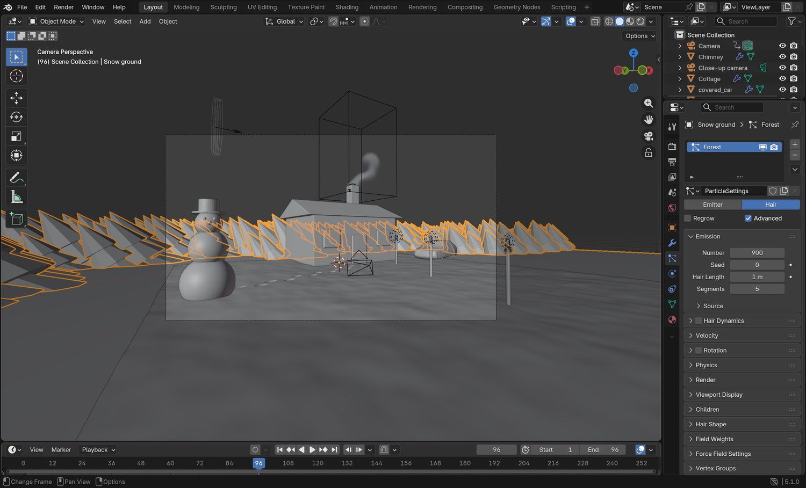
Real screenshot: the ground’s hair particle system in the Particles properties, instancing the pine.
STEP CHECKLIST
GLOSSARY
Weight paint: Painting values from 0 (blue) to 1 (red) onto vertices
Vertex group: A named set of vertices with weights
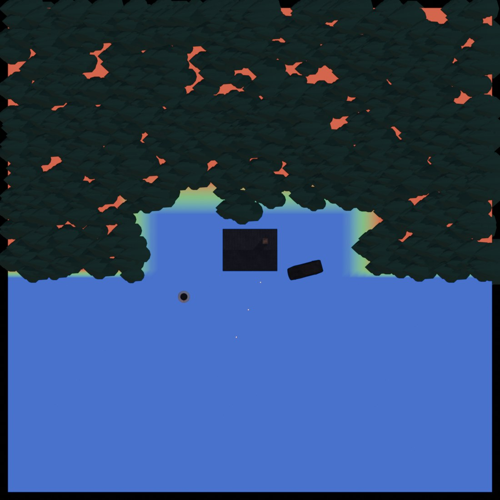
Real Blender render of the Forest weight map from above. Blue: no trees (cottage, path, yard); red: dense forest.
WHYWeight painting stores a value on every vertex. Here it controls particle density; later it controls how a character’s skin bends with its bones (rigging).
CHECKA Forest vertex group painted by you, and hundreds of trees growing only in the painted areas.
FIXTrees everywhere? Density isn’t set to Forest. Trees too small or big? Change the particle Size. Pine visible in the middle of the scene? Move the original out of view.
WORKED EXAMPLE · DIFFERENT OBJECTThe demo forest is 900 particles of one pine model; weight 0 within about 11 m of the cottage.
STRETCH (AFTER THE CHECK PASSES)Add a second tree type (a bare birch) as a second particle system with its own weight group.
Method basis: B4 · B5. Values and sequence are authored for this project.
Session F · Lesson 6 · mm12-26-s06-d06
Particles: falling snow and chimney smoke.
Two effects bring the scene to life: snow drifting down, and smoke rising from the chimney.
IN SHORTEmitter plane; snowflake object; 9000 particles from frame −300; low gravity, Brownian; wind; hide emitter.
READ ALOUD
DOCUMENT: WinterCottage_YourName.blend SELECT: An emitter plane above the scene, a snowflake TOOLS / ROUTE: Particle system (Emitter) · Render As Object · Field Weights · Add › Force Field › Wind
Add a plane high above the scene (about 10 m up, 30 m wide). This is the snow emitter.
Model a snowflake: a tiny Ico Sphere (radius 0.045 m) with a white, slightly glowing material. Move it out of view.
On the emitter add a Particle system: Number 9000, Frame Start −300 (so snow is already falling at frame 1), End 96, Lifetime 400.
Render As Object: the snowflake. In Field Weights lower Gravity to about 0.2 so flakes drift slowly; add Brownian motion 0.4 for wobble.
Add › Force Field › Wind, pointed across the scene (Strength about 1.5). In the emitter’s object properties, turn off Show Emitter in renders.
STEP CHECKLIST
GLOSSARY
Particle system: Generates many copies of something over time
Force field: An invisible force (wind, turbulence) that pushes particles
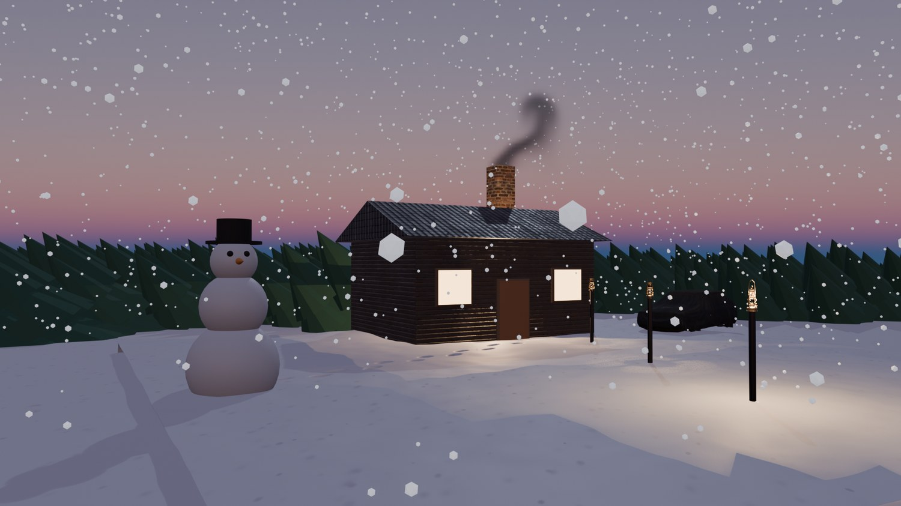
Real render: falling snow from the particle emitter, and smoke rising from the chimney.
WHYParticle systems generate thousands of objects from one setting. Adjusting gravity, randomness and wind makes them feel like weather, not rain.
CHECKSnow falling across the whole frame from frame 1, drifting sideways in the wind, with no emitter plane visible.
FIXSnow only at the top of the frame? Start it earlier (Frame Start −300) and raise gravity slightly. Flakes too big or small? Change the particle Size.
WORKED EXAMPLE · DIFFERENT OBJECTThe demo uses 9000 flakes, gravity 0.2 and a wind of 1.5 blowing from the left.
STRETCH (AFTER THE CHECK PASSES)Add a second, slower layer of big soft flakes close to the camera for depth.
Method basis: B5. Values and sequence are authored for this project.
13
Make smoke rise from the chimney
IN SHORTQuick Smoke on a chimney cube; size the domain; resolution 48; pale smoke; low wind weight; bake.
READ ALOUD
DOCUMENT: WinterCottage_YourName.blend SELECT: A small cube inside the chimney top TOOLS / ROUTE: Object › Quick Effects › Quick Smoke · Domain settings · Bake
Add a small cube (0.35 m) inside the top of the chimney. With it selected choose Object › Quick Effects › Quick Smoke.
A box (the Domain) appears. Scale and move it above the chimney so the smoke has room to rise (about 2 × 2 × 3.5 m).
Domain Physics: Resolution Divisions 48 (low is fine for classroom computers), Cache Frame End 96, Type All, and choose a cache folder in your project.
Flow Physics (the small cube): Smoke Color pale grey. In the domain’s Field Weights, lower Wind to about 0.12 so the wind bends the smoke without flattening it.
Click Bake (Domain › Cache › Bake All). Hide the small cube in renders. Scrub the timeline to see the smoke curl.
STEP CHECKLIST
GLOSSARY
Domain: The box where a simulation happens
Bake: Calculating a simulation and saving it to disk
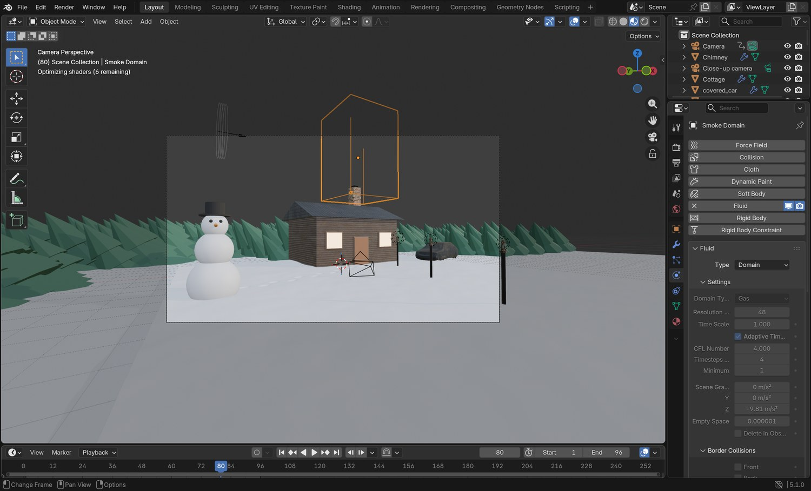
Real screenshot: the smoke domain selected above the chimney, with its Fluid (Domain) settings in the Physics properties.
WHYBlender’s fluid simulation calculates real smoke movement. A low resolution bakes fast; the domain box limits where smoke can exist.
CHECKA baked smoke plume curling out of the chimney and drifting gently in the wind, visible in the Rendered view.
FIXSmoke cut off? The domain is too small: make it taller. Bake slow? Lower Resolution Divisions. Smoke dark? Lighten the Smoke Color and the domain’s volume Color.
WORKED EXAMPLE · DIFFERENT OBJECTThe demo smoke baked 96 frames at resolution 48 in about a minute on a laptop.
STRETCH (AFTER THE CHECK PASSES)Turn on Noise in the domain for finer wisps (slower to bake).
Method basis: B6. Values and sequence are authored for this project.
Session G · Lesson 7 · mm12-26-s06-d07
Keyframes and compositing.
Make the scene move with keyframes, then finish the image the way studios do, in the compositor.
TODAYKeyframes (30 min), compositing (35 min).
14
Animate with keyframes: a camera push-in and flickering lanterns
IN SHORTKey camera at 1 and 96; key lantern Power with small changes; Graph Editor easing; offset flickers.
READ ALOUD
DOCUMENT: WinterCottage_YourName.blend SELECT: Camera location; lantern light power TOOLS / ROUTE: I (insert keyframe) · Timeline · Dope Sheet · Graph Editor
Go to frame 1, select the camera, hover over the viewport and press I › Location.
Go to frame 96, move the camera slowly closer (about 3 m) and press I again. Play (Spacebar).
Select a lantern light. At frame 1, hover over Power in the light properties and press I. Change Power slightly at frames 30, 36 and 60 and key each: a gentle flicker.
Open the Graph Editor and look at the curves. Select all keys and try T › Linear or Bezier to change how the motion eases.
Offset each lantern’s flicker by a few frames so they don’t pulse together.
STEP CHECKLIST
GLOSSARY
Keyframe: A saved value at a moment in time
Easing: How motion speeds up and slows down between keys
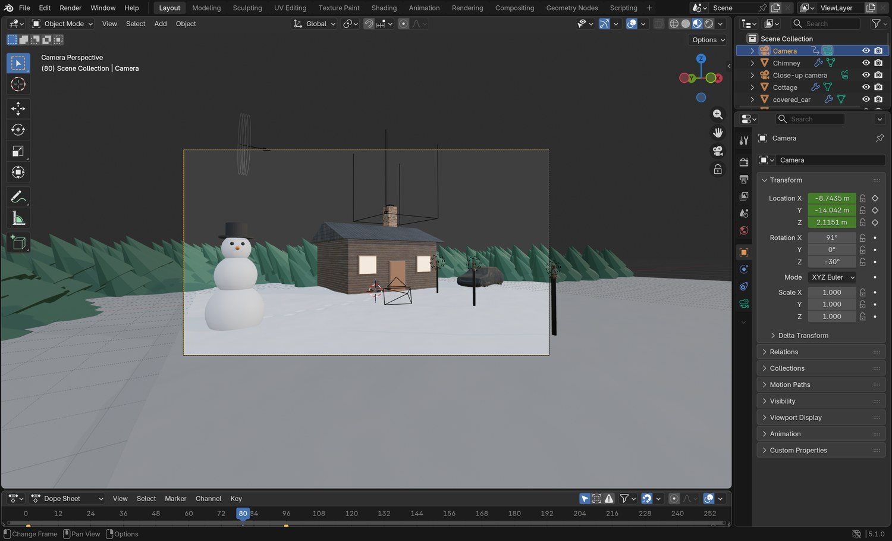
Real screenshot: the camera’s Location fields turn yellow when keyed, and the keyframes appear in the Dope Sheet at the bottom.
WHYKeyframes record a value at a moment in time; Blender fills in the frames between. The same idea animates cameras, lights, characters and anything else.
CHECKA smooth 4-second camera push-in and lanterns that flicker slightly out of time with each other.
FIXCamera jumps? Check there are keys at 1 and 96 only. Nothing moving? The keys may be on the wrong object: check the Dope Sheet.
WORKED EXAMPLE · DIFFERENT OBJECTThe demo camera moves about 3 m forward over 96 frames with default (Bezier) easing.
STRETCH (AFTER THE CHECK PASSES)Animate the snowman’s hat tipping off in the wind at frame 70.
Method basis: B1. Values and sequence are authored for this project.
15
Finish it in the compositor: glow and colour
IN SHORTCompositing workspace; Glare (Bloom, high threshold); Color Balance; compare; keep it subtle.
READ ALOUD
DOCUMENT: WinterCottage_YourName.blend SELECT: The compositor node tree TOOLS / ROUTE: Compositing workspace · Glare (Bloom) · Color Balance · Viewer
Open the Compositing workspace and create a new compositor node tree.
Add a Glare node between Render Layers and the output. Set Type to Bloom, Threshold about 1.6 (so only the brightest windows and lanterns glow), Strength about 0.5.
Add a Color Balance node after it and nudge the shadows slightly blue and the highlights slightly warm.
Render (F12) and compare with and without the nodes (mute a node with M).
Keep it subtle: the glow should look like light in cold air, not a filter.
STEP CHECKLIST
GLOSSARY
Compositor: Blender’s node-based tool for finishing rendered images
Bloom: A soft glow around the brightest parts of an image
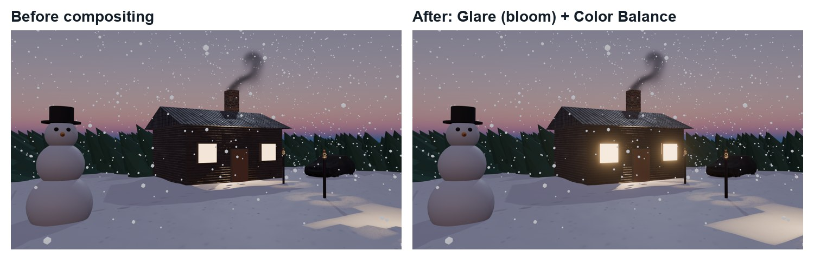
Before and after (real renders): the Glare node adds a soft bloom to windows and lanterns, and Color Balance warms the highlights.
WHYStudios finish every shot in compositing. Small, deliberate adjustments to glow and colour make a render feel cinematic.
CHECKA subtle bloom only on the brightest lights and a gentle warm/cool balance, visibly better than the raw render.
FIXEvery snowflake glows? Raise the Glare threshold or lower the flakes’ emission. No change? The compositor output isn’t connected, or Compositing isn’t enabled in Output properties.
WORKED EXAMPLE · DIFFERENT OBJECTThe demo uses Bloom at threshold 1.6 and strength 0.5.
STRETCH (AFTER THE CHECK PASSES)Add a Lens Distortion node with a little dispersion for a camera-lens feel.
Method basis: B7. Values and sequence are authored for this project.
Session H · Lesson 8 · mm12-26-s06-d08
The studio changes the brief.
The producer loves the scene, then changes one thing. You decide how to deliver it.
TODAYIndependent changed brief (65 min).
16
Practical check: the producer changes the brief
IN SHORTRead the card; plan; change a copy; render; explain.
READ ALOUD
DOCUMENT: Your scene · the producer’s card SELECT: Whatever the card requires TOOLS / ROUTE: Your own decisions
Read your producer card (below).
Plan which parts of the scene must change: models, textures, weights, particles, smoke, lights, keyframes or compositing.
Make the changes in a copy of your file (WinterCottage_YourName_v2.blend).
Render a still and play the animation to check.
Write three sentences: what changed, which Blender tools you used and why, and what you would polish next.
Card
The producer says
1 · Blizzard
“Make it a blizzard: heavy snow, strong wind, the smoke blown sideways.”
2 · Midnight
“It’s midnight: darker sky, brighter windows and lanterns.”
3 · Visitor
“Someone has just arrived: new footprints from the car to the door, and the door light on.”
4 · New angle
“Shoot it from the snowman’s point of view.”
Independent evidence: the main achievement evidence for the bootcamp.
STEP CHECKLIST
GLOSSARY
Iteration: Improving a design through repeated changes
WHYA scene built with modifiers, particles and keyframes can be changed quickly. Doing it on your own shows you understand how the parts fit together.
CHECKA v2 scene that meets the card, a render, and an explanation naming the tools you chose.
FIXStuck? Change one system at a time and render after each. (Independent step: the Coach can explain tools but not decide your changes.)
WORKED EXAMPLE · DIFFERENT OBJECTWorked example on a different scene: a “summer” card made a student swap the snow texture for grass, delete the snow particles and change the sky elevation.
STRETCH (AFTER THE CHECK PASSES)Take two cards at once.
Method basis: B1. Values and sequence are authored for this project.
Session I · Lesson 9 · mm12-26-s06-d09
Render the shot. Licence 3.
Render the 4-second animation, screen it and defend your choices.
TODAYRender (25 min), screening and defence (40 min).
Set the output path to your project folder: WinterCottage_YourName_.
Render › Render Animation (Ctrl/Cmd+F12). The smoke and snow are already baked, so it renders straight through.
Screening: play it for the class and explain one modelling, one effects (particles or smoke), and one finishing (light, keyframes or compositing) choice.
Licence 3 check: your teacher checks the file (weights, particles, smoke, keys, compositor) and signs you off.
STEP CHECKLIST
GLOSSARY
Render animation: Rendering every frame into a video
WHYFinishing and presenting is part of the job. Explaining choices with the right vocabulary shows you can direct a shot, not only follow steps.
CHECKA 4-second MP4 of your scene, a defence using the vocabulary, and Licence 3 signed off.
FIXRender slow? Lower EEVEE samples or render at 50 % for a test. MP4 won’t play? Use H.264 in an MPEG-4 container.
WORKED EXAMPLE · DIFFERENT OBJECTThe demo 96-frame shot renders in a few minutes in EEVEE on a laptop.
STRETCH (AFTER THE CHECK PASSES)Make a 10-second version with a second camera angle (the close-up of the footprints) and cut between them in the Video Editing workspace.
Method basis: B1. Values and sequence are authored for this project.
Before you submit
Student QA.
Evidence conversation
Keep it short and specific.
SENTENCE FRAMESI used ___ so that ___. · The forest grows only where ___ because ___. · For the producer card I changed ___ using ___.
Figures marked Illustration are drawn, not screenshots. Step values are starting points authored for this project. Draft for teacher review; not yet classroom-piloted.